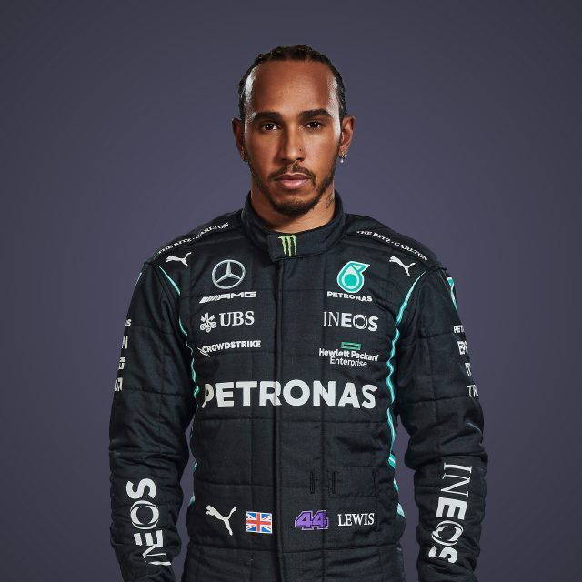

Driver Profile
This is a driver profile of Season 2022 - 2023
LEWIS
HAMILTON

Biography
‘Still I Rise’ – these are the words emblazoned across the back of Lewis Hamilton’s helmet and tattooed
across his shoulders, and ever since annihilating expectations with one of the greatest rookie
performances in F1 history in 2007, that’s literally all he’s done: risen to the top of the all-time
pole positions list ahead of his hero Ayrton Senna, surged into first place in the wins column
surpassing the inimitable Michael Schumacher, and then matched the legendary German’s seven world
titles.
Is he the G.O.A.T? Few would deny that he’s in the conversation – and what’s more he’s got there his
way, twinning his relentless speed with a refusal to conform to stereotypes for how a racing driver
should think, dress or behave.
Respect is hard earned in F1, but Hamilton – now Sir Lewis Hamilton to be precise – has it from every
one of his peers. Why? Because they know that whatever the track, whatever the conditions, whatever the
situation, when his visor goes down and the lights go out, it’s Hammertime.
TEAM
Mercedes
COUNTRY
United Kingdom
DATE OF
BIRTH
07 JAN 1985
NUMBER
44
Record
Podiums : 182
Points : 4165.5
Grands Prix entered : 288
World Championships : 7
Highest race finish : 1 (x103)
Highest grid position : 1